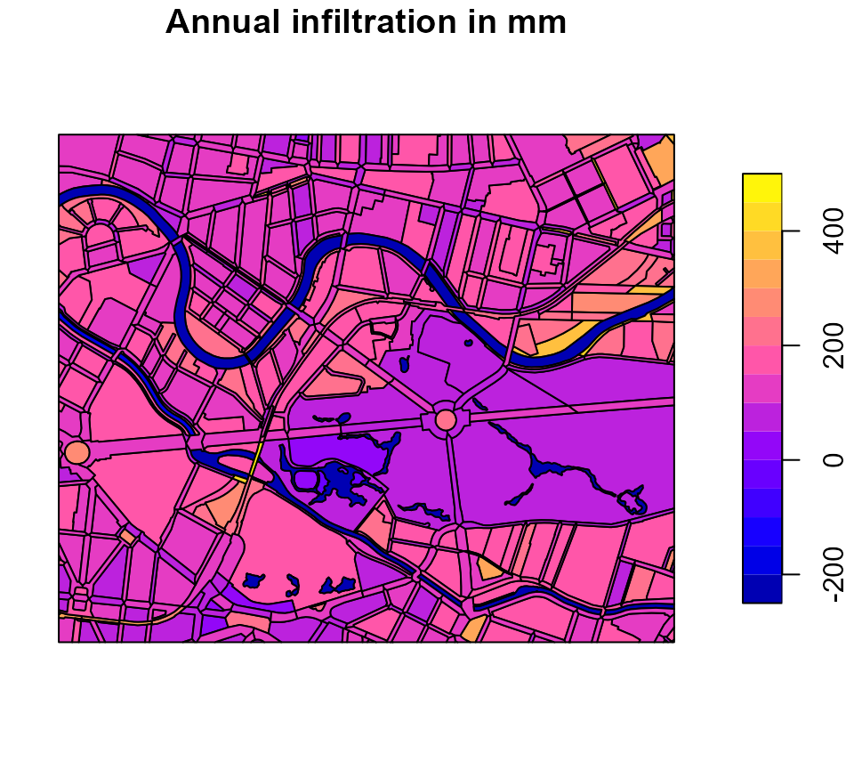
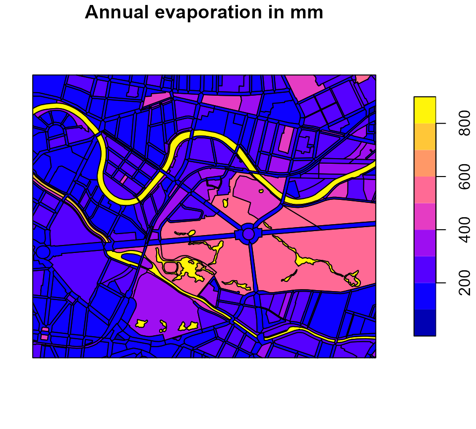

Background
This package provides an R-implementation and extension of the simple water balance model Berlin ABIMO 3.2, which was originally developed by the Federal Institute of Hydrology (Bundesanstalt für Gewässerkunde) for rural areas and later adapted for urban areas, namely for Berlin, Germany. In May 2022, the source code of the model was published on the developer platform GitHub (https://github.com/umweltatlas/abimo).
During the research project AMAREX (an acronym for the German translation of “adaptation of stormwater management to extreme events”), funded by the former German Federal Ministry of Education and Research (Bundesministerium für Bildung und Forschung – BMBF), we, the package authors from Kompetenzzentrum Wasser Berlin gGmbH (KWB) started to work on the original program code, written in the programming language C++ (https://github.com/KWB-R/abimo). We then decided to transfer the model to the programming language R, to rename it to R-Abimo (see e.g. here) and to publish it in the form of this R package kwb.rabimo. Compared to the original model, R-Abimo is more generic (i.e. can be more easily adapted to other cities than Berlin) and it contains some additional features:
- simulation of stormwater management measures (green roofs, swales),
- “conversion” of urban areas to “natural” areas,
- calculation of delta-W, an indicator for the “distance” between the urban (status quo) state and an assumed “natural” state.
Prerequisites
To use the package, you need to have R installed in a version >= 4.3.1. You can download the current version of R from here. Not necessary, but useful is the usage of an Integrated Development Environment (IDE), such as RStudio Desktop that can be downloaded from here.
Installation
In order to install kwb.rabimo directly from our GitHub account KWB-R, we recommend to install the R package remotes first:
# Install package "remotes" from CRAN
install.packages("remotes")You can then install kwb.rabimo either in the latest “official” version:
# Install package "kwb.rabimo" (latest "release") from GitHub
remotes::install_github("KWB-R/kwb.rabimo")or in the latest “development” version:
# Install package "kwb.rabimo" (development version) from GitHub
remotes::install_github("KWB-R/kwb.rabimo@dev", build_vignettes = TRUE)By setting build_vignettes = TRUE you make sure that
this tutorial vignette is installed together with the package. Please
note that this tutorial is currently only available in the “development”
version.
Basic Usage
Provide input data and configuration
Compared to the original C++ version of Abimo we have modified the structures of input data, output data and configuration. For Berlin, Germany, we provide data in the new structures in the package:
# Load Berlin data in the original Abimo format
abimo_inputs <- kwb.rabimo::rabimo_inputs_2025The object abimo_inputs is a list with two elements:
-
abimo_inputs$datais a data frame containing the actual input data. Each row represents a block area and each column represents a block area’s property. -
abimo_inputs$configis a list that configures runoff factors (for runoff calculation) and Bagrov values (for evapotranspiration calculation) for different surface types and the swale evaporation factor that determines which fraction of the water going into a swale becomes evaporation (the rest becomes infiltration).
You may inspect the first rows (and only the most relevant columns) of the input data with
head(as.data.frame(abimo_inputs$data)[, 1:24])
#> code prec_yr prec_s epot_yr epot_s district total_area roof
#> 1 0100980011000100 608 324 666 509 1 4623.972 0.3243243
#> 2 0100980011000200 607 324 666 509 1 13430.944 0.0004668
#> 3 0100980011000300 607 324 666 509 1 5603.764 0.3893303
#> 4 0100980021000200 609 324 666 509 1 34344.730 0.4511181
#> 5 0100980021000300 608 324 666 509 1 48930.206 0.4155595
#> 6 0100980021000400 609 324 666 509 1 13977.561 0.0939597
#> green_roof swg_roof pvd swg_pvd srf1_pvd srf2_pvd srf3_pvd srf4_pvd
#> 1 0.0000 0.86 0.3704374 0.50 0.49 0.46 0.03 0.02
#> 2 0.0000 0.70 0.4371382 0.68 0.31 0.53 0.07 0.09
#> 3 0.0939 0.76 0.4414658 0.55 0.20 0.60 0.10 0.10
#> 4 0.2134 0.94 0.3339549 0.75 0.45 0.28 0.13 0.14
#> 5 0.0277 0.73 0.3574335 0.61 0.42 0.38 0.08 0.12
#> 6 0.0000 0.82 0.4508725 0.78 0.31 0.56 0.01 0.12
#> srf5_pvd to_swale gw_dist ufc30 ufc150 land_type veg_class irrigation
#> 1 0 0 5.9 13 10 urban 9.5 0
#> 2 0 0 5.2 11 10 urban 3.6 0
#> 3 0 0 4.5 13 10 urban 1.5 0
#> 4 0 0 5.4 13 10 urban 5.3 0
#> 5 0 0 5.6 12 10 urban 13.2 50
#> 6 0 0 4.5 11 10 urban 2.7 0and you may print the whole configuration object with
abimo_inputs$config
#> $runoff_factors
#> roof surface1 surface2 surface3 surface4 surface5
#> 1.00 0.90 0.70 0.40 0.10 0.48
#>
#> $bagrov_values
#> roof green_roof surface1 surface2 surface3 surface4 surface5
#> 0.05 0.65 0.11 0.11 0.25 0.40 0.25
#>
#> $swale
#> swale_evaporation_factor
#> 0.1Please refer to the help page of rabimo_inputs_2025 for
further information. To open the help page, run
?kwb.rabimo::rabimo_inputs_2025Note: We provide also an object
rabimo_inputs_2020, that refers to an older version of the
Berlin data set. It can be used in almost the same way as
rabimo_inputs_2025. However, this old version does not
contain geographical information and we do not cover it within this
tutorial.
Since the we provide the Berlin dataset together with geographical information we can plot the spatial distribution of a variable (e.g. the annual precipitation) in the form of a map:
# Load the sf package (simple features) to allow for geographical plotting
library(sf)
#> Linking to GEOS 3.13.1, GDAL 3.11.0, PROJ 9.6.0; sf_use_s2() is TRUE
# Provide a subset of the data representing a zoom into the centre of Berlin
berlin_zoom <- kwb.rabimo::crop_box(
abimo_inputs$data,
xoffset = 0.35,
yoffset = 0.5,
xscale = 0.07,
yscale = 0.07
)
#> Warning: attribute variables are assumed to be spatially constant throughout
#> all geometries
# Plot annual precipitation
plot(berlin_zoom[, "prec_yr"], main = "Annual precipitation in mm")
Run R-Abimo for the status quo
To run R-Abimo, call the main function run_rabimo() by
passing both, the input data and the configuration object, to the
function:
# Run R-Abimo
water_balance_urban <- kwb.rabimo::run_rabimo(
data = berlin_zoom,
config = abimo_inputs$config
)
#> Collecting climate related data ... ok. (0.00 secs)
#> Preparing soil property data for all block areas ... ok. (0.01 secs)
#> Precalculating actual evapotranspirations for impervious areas ... ok. (0.09 secs)
#> Precalculating actual evapotranspirations for waterbodies or pervious areas ... ok. (0.03 secs)
# Have a look at the first lines of the result data frame
head(sf::st_drop_geometry(water_balance_urban))
#> code area runoff infiltr evapor
#> 1 0200010761000000 85207.227 378.040 108.615 116.345
#> 2 0200010901000100 14948.442 0.000 97.119 512.881
#> 3 0200010901000200 8911.477 199.563 171.552 240.885
#> 4 0200010901000300 29381.735 21.930 317.488 272.581
#> 5 0200010941000100 22281.140 285.523 123.478 194.999
#> 6 0200010941000200 8264.302 405.532 75.383 128.085The result data frame contains two columns that are copied from the input data:
-
code- unique identifier of each block area, -
area- the total block area in square metres in column `area
as well as three columns containing the model outputs, namely the water balance components:
-
runoff- surface runoff in mm, -
infiltration- infiltration in mm, and -
evapor- evaporation in mm.
If the model inputs contained geographical information (as in our case) that information is restored in the output so that the model results can be plotted in terms of maps:
# Plot model output "runoff"
plot(water_balance_urban[, "runoff"], main = "Annual runoff in mm")
# Plot model output "infiltration"
plot(water_balance_urban[, "infiltr"], main = "Annual infiltratio in mm")
# Plot model output "evaporation"
plot(water_balance_urban[, "evapor"], main = "Annual evaporation in mm")
Generate your own block areas
The package provides a function to generate a row in the format that
R-Abimo requires. You need to pass at least the unique identifier(s)
(code) for the block area(s). If you leave all the other
arguments blank, you get (a) default block area(s). However, you can
override the default values by passing arguments that are named
according to the names of the input columns:
# Generate artificial block areas, using default values and differing only in
# the fractions of the areas that are refer to roofs
codes <- paste0("area-", 1:5)
art_blocks <- kwb.rabimo::generate_rabimo_area(
code = codes,
roof = seq(0, 1, length.out = length(codes))
)
# Have a look at the data
art_blocks
#> code prec_yr prec_s epot_yr epot_s district total_area main_frac roof
#> 1 area-1 600 300 700 500 0 100 1 0.00
#> 2 area-2 600 300 700 500 0 100 1 0.25
#> 3 area-3 600 300 700 500 0 100 1 0.50
#> 4 area-4 600 300 700 500 0 100 1 0.75
#> 5 area-5 600 300 700 500 0 100 1 1.00
#> green_roof swg_roof pvd swg_pvd srf1_pvd srf2_pvd srf3_pvd srf4_pvd srf5_pvd
#> 1 0 1 0.6 0.7 0.5 0.2 0.1 0.1 0.1
#> 2 0 1 0.6 0.7 0.5 0.2 0.1 0.1 0.1
#> 3 0 1 0.6 0.7 0.5 0.2 0.1 0.1 0.1
#> 4 0 1 0.6 0.7 0.5 0.2 0.1 0.1 0.1
#> 5 0 1 0.6 0.7 0.5 0.2 0.1 0.1 0.1
#> road_frac pvd_r swg_pvd_r srf1_pvd_r srf2_pvd_r srf3_pvd_r srf4_pvd_r
#> 1 0 0.9 1 0.9 0.1 0 0
#> 2 0 0.9 1 0.9 0.1 0 0
#> 3 0 0.9 1 0.9 0.1 0 0
#> 4 0 0.9 1 0.9 0.1 0 0
#> 5 0 0.9 1 0.9 0.1 0 0
#> to_swale gw_dist ufc30 ufc150 land_type veg_class irrigation
#> 1 0 3 13 13 urban 35 0
#> 2 0 3 13 13 urban 35 0
#> 3 0 3 13 13 urban 35 0
#> 4 0 3 13 13 urban 35 0
#> 5 0 3 13 13 urban 35 0
# Run R-Abimo on the block areas
art_water_balance <- kwb.rabimo::run_rabimo(art_blocks, config = abimo_inputs$config)
#> Collecting climate related data ... ok. (0.00 secs)
#> Preparing soil property data for all block areas ... ok. (0.00 secs)
#> Precalculating actual evapotranspirations for impervious areas ... ok. (0.01 secs)
#> Precalculating actual evapotranspirations for waterbodies or pervious areas ... ok. (0.00 secs)
# How does the roof area influence the runoff?
plot(art_blocks$roof, art_water_balance$runoff)Comparison of urban state with natural state
In the research project AMAREX we propose to use the deviation of the water balances that are simulated for both, the current (urban) state and for an assumed “natural” state as an indicator for the vulnerability of an urban area to climate change effects (such as heat, flooding, negative impacts on the surface water quality). As a measure of deviation we introduce that is calculated as follows:
with
- and = evaporation for the natural and urban state, respectively,
- and = infiltration for the natural and urban state, respectively,
- and = runoff for the natural and urban state, respectively.
The higher the value of the more different are the water balance components, i.e. the less similar the urban area is to a natural area. The lower the value of the less different are the water balance components, i.e. the more similar the urban area is to a natural area.
The hypothesis is that a lower value of indicates a better preparedness to climate change effects (e.g. because increased evaporation as it occurs in a natural state scenario leads to a reduction of heat).
Run R-Abimo for a natural state scenario
In the package we provide a function data_to_natural()
that converts a set of urban block areas to corresponding “natural”
block areas. The function converts all roof areas and unbuilt paved
areas to pervious areas and assumes an overall vegetation as it can be
found in a park (a mixture of meadows, bushes and trees).
# Convert urban state to "natural" state
berlin_zoom_natural <- kwb.rabimo::data_to_natural(berlin_zoom)
# Calculate the water balance for the "natural" state
water_balance_natural <- kwb.rabimo::run_rabimo(
data = berlin_zoom_natural,
config = abimo_inputs$config
)
#> Collecting climate related data ... ok. (0.00 secs)
#> Preparing soil property data for all block areas ... ok. (0.01 secs)
#> Precalculating actual evapotranspirations for impervious areas ... ok. (0.10 secs)
#> Precalculating actual evapotranspirations for waterbodies or pervious areas ... ok. (0.01 secs)Calculate “Delta-W”
For the first ten blocks, calculate the deviation from the natural state:
kwb.rabimo::calculate_delta_w(
urban = rabimo_result[1:10, ],
natural = rabimo_result_natural
)TODO: - calculate_delta_w - RWBM - sehr kurze Intro zu den implementierten RWBM (inkl. dass man den pvd Anteil ändern kann?) - wie man gezielt einen Wert in einer bestimmten Spalte (z.B. green_roof) oder in alle Spalten ändert - Plot von vorher vs. nachher